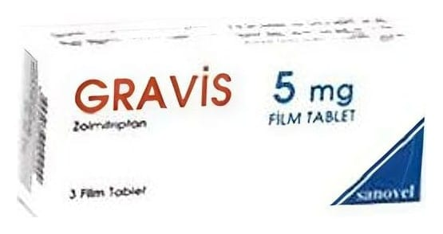

Gravis 5 mg Film Tablet, 3 Tablet

Ne için kullanılır
KT · Bölüm 1GRAVİS pembe renkte, yuvarlak, bir yüzü çentikli film tablettir.
GRAVİS film tablet 3, 6 ve 18 tabletlik ambalajda sunulmaktadır.
GRAVİS, 5HT
agonistleri olarak adlandırılan ilaç sınıfına ait bir ilaçtır. Migren ataklarının tedavisinde kullanılır. Bu grup ilaçlar migren atağı sırasında beynin migrenle ilgili bölgesi üzerinde etkilidir.
GRAVİS, migren atağı görüldüğü zaman kullanılan bir ilaçtır. Migren atağının oluşmasını önlemek için kullanılmaz.